El Gestor de Calendarios Laborales es una aplicación diseñada para facilitar la tarea de la planificación de las jornadas en calendarios laborales.
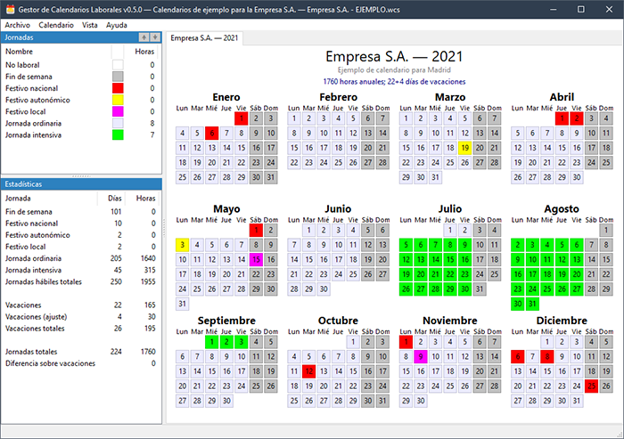
Esta aplicación ha sido pensada para simplificar la tarea de la negociación de calendarios laborales entre empresa y trabajadores. Además, puede ser usada por los propios trabajadores para calcular su calendario laboral particular, tanto si la jornada es una jornada normal como si, por ejemplo, estos tienen jornada reducida.
Descargar Gestor de Calendarios Laborales v0.5.0↓
Windows (AMD64)
Ventana principal
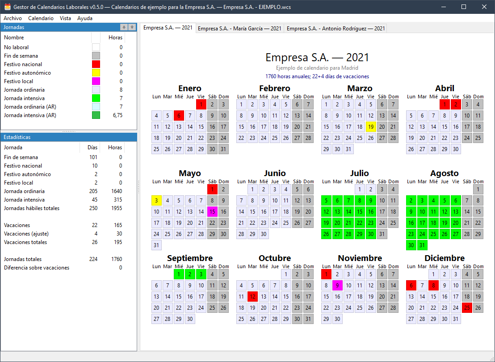
La interfaz gráfica de usuario de la aplicación tiene tres partes dentro de la ventana principal:
- Un listado de posibles jornadas (izquierda arriba), donde principalmente se especifican el nombre de la jornada y el número de horas que se realizan en la misma. Además, cuenta con datos adicionales como una descripción, el horario y un color.
- Un calendario anual (a la derecha), donde se van marcando, día a día, el tipo de jornada que se va a realizar dicho día (o jornadas no laborales, festivos, etc.).
- Un conjunto de estadísticas (izquierda abajo), donde se muestran los cálculos para todas las jornadas utilizadas en el calendario laboral, así como las horas anuales realizadas con esos tipos de jornadas teniendo en cuenta el número de días de vacaciones (especificado en la configuración del calendario). Además, en caso de que un trabajador indique vacaciones efectivas, estas estadísticas también mostrarán las horas reales trabajadas y disfrutadas como vacaciones.
El funcionamiento general es de la siguiente forma:
- La primera tarea es añadir los tipos de jornadas, laborales o no, que se usarán a lo largo del año. Existen dos tipos de jornadas de forma predeterminada: la jornada no laboral y el fin de semana, jornadas con las que se inicializan todos los calendarios de forma predeterminada. Estas jornadas no son de trabajo por lo que sus horas de trabajo son cero.
- Una vez añadidas todas las jornadas que se van a necesitar a lo largo del año, se marca cada día del calendario con la jornada correspondiente. Para ello, basta con seleccionar de la lista de las jornadas la jornada con la que se quieren marcar los días y hacer clic en cada día del calendario con el que se quiera marcar dicha jornada (esta tarea se puede acelerar mediante la opción Marcar Rango.
- Según se vayan marcando jornadas laborales, las estadísticas ser irán actualizando con el cálculo de todos los valores.
- Si sobre un día del calendario se hace clic por segunda vez, se marcará con la jornada anterior.
- Además, cada día cuenta con un menú contextual desde el que también se pueden marcar las jornadas (entre otras cosas que veremos más adelante):
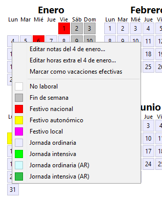
Jornadas laborales
Para gestionar los tipos de jornadas hay que hacer clic con el botón derecho del ratón sobre la lista de jornadas, con lo que aparecerá un menú contextual:
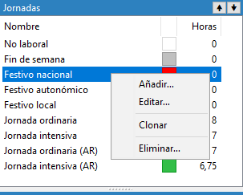
Mediante dicho menú se pueden añadir, modificar, clonar y borrar todas las jornadas (excepto las jornadas predeterminadas, que son las “No laboral” y “Fin de semana”). Al añadir o modificar una jornada laboral, aparece la ventana de edición de jornadas:
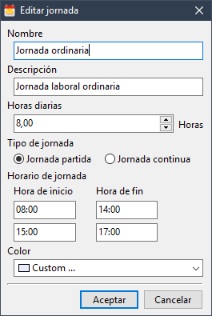
Una vez rellenados los datos de forma correcta (es obligatorio el nombre y que el horario coincida con el número de horas indicadas), se guarda la jornada presionando el botón “Aceptar”. A partir de ese momento ya se puede usar dentro del calendario.
Calendario
El calendario es la parte de la interfaz de usuario donde se muestran los días del año con sus jornadas correspondientes, además del título del mismo (arriba), una descripción (debajo del título) y una configuración (debajo de la descripción) que indica el número máximo de horas laborales y el número de días de vacaciones. Tanto el título como la descripción se pueden editar haciendo doble clic en el propio título o descripción, mientras que la configuración se puede cambiar mediante un simple clic en el texto o mediante el menú “Calendario”, submenú “Configuración del calendario”.
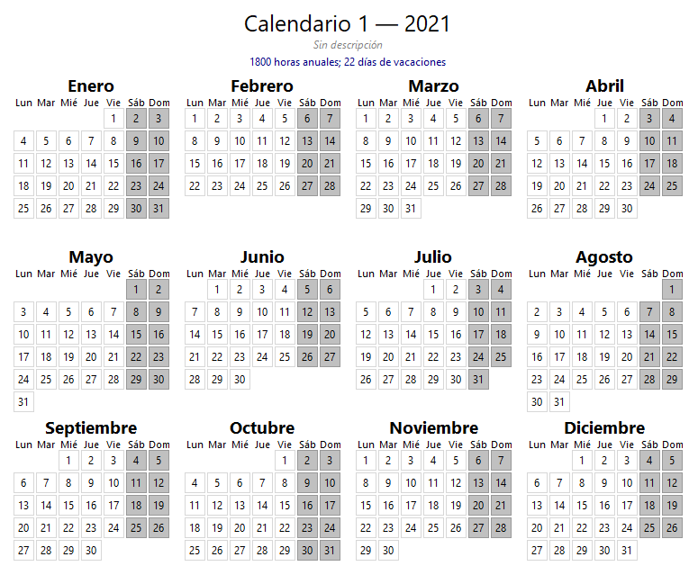
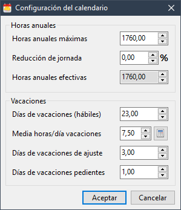
Esta configuración, tanto las horas máximas trabajadas como el número de días de vacaciones, se deben rellenar con los datos provenientes del Estatuto de los Trabajadores y/o de cualquier otro convenio y/o acuerdo de empresa.
De forma predeterminada la configuración cuenta con 1800 horas máximas trabajadas anualmente y 22 días hábiles de vacaciones, que son las horas máximas que se pueden realizar en España y el número de días de vacaciones hábiles mínimos que tiene cualquier trabajador.
Actualmente esta aplicación no tiene implementada la posibilidad de utilizar y/o marcar días naturales de vacaciones.
Además, en esta configuración también se puede especificar el porcentaje de reducción de jornada, con lo que el número de horas máximas anuales se adecuará a tal efecto.
También existe la posibilidad de añadir el número de días de ajuste de vacaciones, que son los días extra que hay que añadir durante el cálculo del calendario para que no se trabajen más horas de las horas máximas indicadas en la ley, además, se pueden marcar, en caso de que el calendario sea específico para un trabajador, el número de días de vacaciones pendientes de años anteriores.
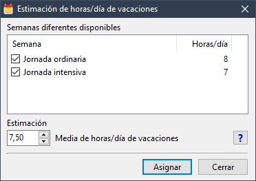
Como se puede observar en la captura de pantalla anterior, en esta configuración existe la opción “Media horas/día vacaciones”.
Esta opción se utiliza para estimar el número de horas medio por día de vacaciones en caso de que exista más de una jornada laboral a lo largo del año (por ejemplo jornada partida y jornada intensiva) y debe ser ajustado manualmente.
Aunque dicha estimación se debe hacer manualmente, existe una ventana para calcularla, donde se muestran los tipos de semanas disponibles con su correspondiente media de horas por día.
Esta estimación se realiza teniendo en cuenta que la mitad de las vacaciones se realizarán en una de las jornadas y la otra mitad en la otra jornada. Si existen más de dos jornadas diferentes a lo largo del año, es necesario hacer el ajuste de forma manual.
Todos los cambios realizados en esta ventana se verán reflejados en las estadísticas una vez aceptados.
Estadísticas
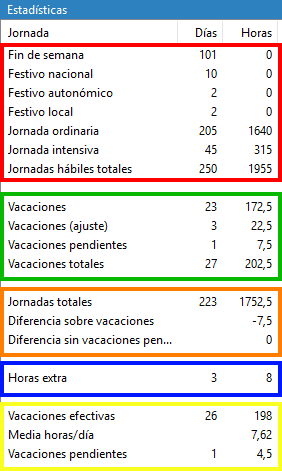
Las estadísticas muestran los valores relativos a las jornadas marcadas en el calendario laboral así como otros valores relativos a vacaciones, vacaciones efectivas y horas extra (en caso de ser un calendario personal). Estas estadísticas se dividen en cinco grupos, indicados en la imagen anterior:
- Grupo rojo
Este grupo de datos muestra las jornadas definidas por el usuario y cuántas veces aparecen marcadas en el calendario (columna “Días”) y cuántas horas suman en total (columna “Horas”). De forma predeterminada no aparecen las jornadas que no se han usado en el calendario actual, pero dichas jornadas se pueden mostrar mediante el menú “Vista”, submenú “Mostrar jornadas sin uso en las estadísticas”.
Además, la última línea de este grupo muestra el sumatorio de todas las jornadas laborables totales junto a las horas laborables totales. Como se puede apreciar en el ejemplo, supera con creces el número de horas máximas anuales porque es necesario restar el número de horas de vacaciones a las que tienen derecho los trabajadores, cosa que se muestra en los grupos verde (vacaciones a disfrutar) y naranja (diferencias entre las horas totales y las horas de vacaciones).
- Grupo verde
En este grupo se muestra el número de días de vacaciones según la configuración del calendario (no son vacaciones efectivas, sino las vacaciones a las que tienen derecho los trabajadores), indicando tanto las vacaciones por convenio/acuerdo como los días de ajuste. Además, en caso de ser un calendario personal, también se muestran las vacaciones pendientes. Finalmente, se muestra el número total de días de vacaciones que un trabajador tiene derecho a disfrutar durante el correspondiente año laboral. El número de horas que aparecen es el número de días multiplicado por el valor medio de horas de día de vacaciones que ha tenido que ser fijado previamente en la configuración del calendario.
- Grupo naranja:
En este grupo se muestran los siguientes elementos:
- Jornadas totales: número de jornadas laborables totales reales, es decir, el número de jornadas que cada trabajador tiene que realizar. Este número son las jornadas hábiles totales menos el número de días de vacaciones a los que cada trabajador tiene derecho. Junto a las jornadas totales aparecen las horas anuales reales según el calendario actual, que se calculan a partir de las horas de las jornadas hábiles totales (grupo rojo) menos las horas de las vacaciones con derecho a disfrute (grupo verde), teniendo en cuenta el valor medio de las horas de un día de vacaciones fijado en la configuración del calendario.
- Diferencia sobre vacaciones: esta línea muestra el número de horas de diferencia entre el número de horas de jornadas hábiles marcadas en el calendario (grupo rojo: jornadas hábiles totales) menos el número de horas de vacaciones con derecho a disfrute (grupo verde: vacaciones totales). Si este valor es positivo significa que según el calendario actual el tarbajador realizará más horas de las horas máximas, mientras que si el valor es negativo este indica que el trabajador realizará menos horas de las horas máximas anuales.
En caso de que el calendario sea un calendario personal y existan días marcados como vacaciones efectivas, esta línea muestra las horas pendientes de disfrute si este valor es negativo, y las horas disfrutadas demás si este valor es positivo. - Diferencia sin vacaciones pendientes: esta línea sólo se muestra en caso de que el calendario sea personal y traslada el valor de la línea anterior como si este fuera un calendario genérico (sin vacaciones efectivas marcadas).
- Grupo azul
Este grupo sólo se muestra si es un calendario persona y existen horas extras marcadas en algún día del año. El número de días indica los días en los que ha habido horas extras y el número de horas indica el total de horas extras trabajadas teniendo en cuenta que no todos los días se han podido realizar el mismo número de horas extras.
- Grupo amarillo
Este grupo sólo se muestra cuando es un calendario personal y se han marcado días como días de vacaciones efectivos, mostrando así un conteo de los días de vacaciones disfrutados así como un cálculo de la media de horas de un día de vacaciones (real, no estimada) y el número de días de vacaciones pendientes según la configuración del calendario.
Otras opciones
Marcado de rangos
Para facilitar la tarea del marcado de jornadas, existe una opción en el menú “Calendario”, submenú “Marcar rango…”, que da la posibilidad de marcar rangos de fechas de diferentes formas:
-
Marcar día de semana: mediante esta opción se puede marcar un día concreto de semana (de lunes a domingo) con una jornada concreta, siendo útil, por ejemplo, para marcar todos los fines de semana o todos los viernes si los viernes tienen jornada continua.
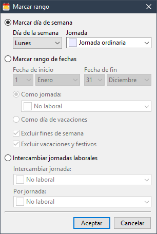
-
Marcar rango de fechas: esta opción permite elegir un rango de fechas independientemente del día de semana y marcarlas o como una jornada específica o como día de vacaciones efectivas. Además, mediante varias opciones, permite excluir de dicho rango los fines de semana y/o las jornadas festivas (jornadas con cero horas de trabajo).
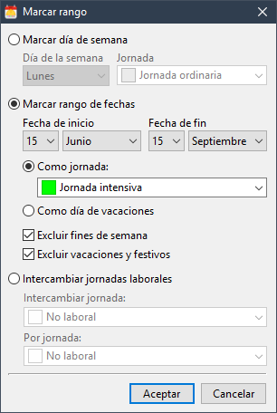
-
Intercambiar jornadas laborales: la última opción permite reemplazar un tipo de jornada por otro.
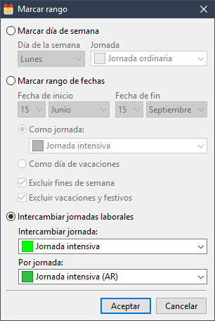
Marcado de vacaciones efectivas
Si el calendario se usa específicamente para un trabajador y no como calendario genérico, es posible marcar los días en los que se han disfrutado vacaciones de forma efectiva, teniendo en cuenta que sólo se pueden marcar jornadas laborales (no jornadas sin tiempo de trabajo) como tal. Para ello hay dos opciones:
- Hacer clic con el botón secundario del ratón sobre el día en el que disfrutaron vacaciones y elegir la opción “Marcar como vacaciones efectivas”. Si el día está marcado como tal, la opción que se mostrará es “Desmarcar como vacaciones efectivas”.
- Hacer clic en el menú principal “Calendario” y luego en “Marcar vacaciones” (o usando el atajo de teclado Control+H). Con esto la aplicación se pondrá en modo de marcado de vacaciones y todos los días del calendario sobre los que se haga clic quedarán marcados como tal. Una vez finalizado, hay que volver a hacer clic en el menú “Calendario → Marcar vacaciones” para quitar el modo de marcado de vacaciones efectivas.
Exportación a PDF
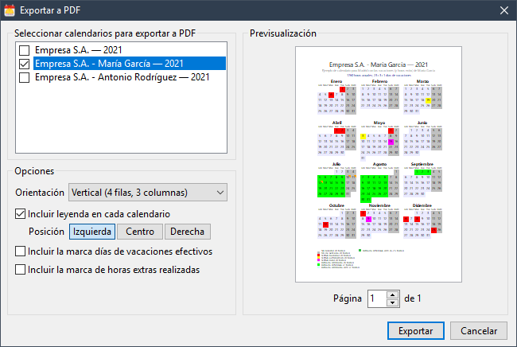
Todos los calendarios se pueden exportar a format PDF para que se puedan distribuir sin posibilidad de modificación y/o imprimir. Para ello hay que ir al menú “Archivo”, luego “Exportar” y, finalmente, “Exportar a PDF” (también mediante el atajo de teclado Control+P).
Con esto aparecerá una ventana de previsualización donde se pueden seleccionar varias opciones:
Las opciones posibles son las siguientes:
- Elección de los calendarios a exportar (todos los seleccionados se exportarán en el mismo archivo PDF).
- Orientación del papel y del calendario: vertical (4 filas por 3 columnas) u horizontal (3 filas por 4 columnas), con el papel orientado de forma vertial u horizontal respectivamente.
- Posibilidad de incluir la leyenda de los tipos de jornada y su posición dentro del PDF generado.
- Posibilidad de incluir la marca de días de vacaciones efectivos (útil únicamente si el calendario es de un trabajador).
- Posibilidad de incluir la marca de horas extras realizadas por día (útil únicamente si el calendario es de un trabajador).
Futuras características
Actualmente todavía no ha sido publicada una versión final de la aplicación por lo que existen características planificadas que aún no están implementadas. Entre ellas se encuentran:
- Exportación del calendario a HTML.
- Exportación del calendario a formato iCalendar (para poder ser importado en el calendario de Outlook, Google o Apple, por ejemplo).
- Importación de calendarios (para ser incluidos en el calendario actual).
- Posibilidad de añadir imágenes para cada calendario.
- ¿Qué licencia tiene la aplicación?
- Actualmente la aplicación tiene un uso libre y gratuito pero su código fuente es privado.
- ¿Se publicará alguna vez el código fuente de la aplicación?
- Es posible.
- ¿La aplicación funciona en GNU/Linux?
- Actualmente sólo funciona a través de Wine, pero es probable que en algún momento existan versiones para GNU/Linux.
- ¿Dónde se pueden reportar fallos, sugerencias, etc.?
- En la página de issues del proyecto en GitHub.
- ¿Se puede aplicar a otros países que no sean España?
- La aplicación está pensada para el cálculo de calendarios laborales en España, pero eso no quiere decir que no se pueda adaptar para cualquier otro país y/o cualquier otra legislación. De todas formas, en caso de que alguien quiera utilizarla en otro país y requiera alguna característica, puede pedirla a través de la página de issues del proyecto. Se valorarán todas las propuestas.
- ¿Cómo se puede contactar con el autor?
- La forma más rápida y sencilla es a través de Twitter.